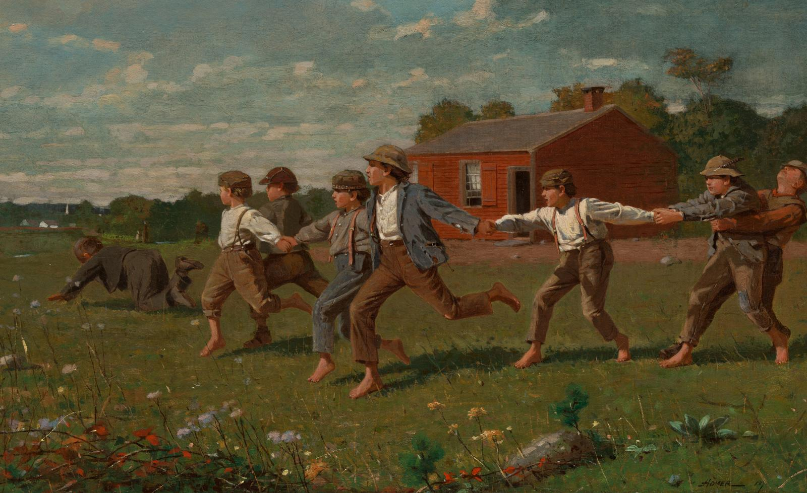

STEM Outreach & Education
Hands-on hardware workshop for students in San Joaquin County, co-hosted by Lawrence Livermore National Laboratory.

Overview
In October 2024, I volunteered at the STEM San Joaquin conference hosted at the University of the Pacific, a STEM outreach event co-sponsored by Lawrence Livermore and Sandia National Laboratories for students across San Joaquin County.
I worked alongside LLNL employees to lead a hands-on workshop where students dismantled, identified, and rebuilt computer hardware from scratch. The goal was to give them a real feel for what engineers do and spark interest in STEM careers.
What We Did
- Guided students through identifying internal PC components (CPU, RAM, GPU, PSU, etc.)
- Led the teardown and reassembly process step by step
- Answered questions and explained how hardware connects to software and real-world systems
- Worked with LLNL staff to coordinate the workshop flow